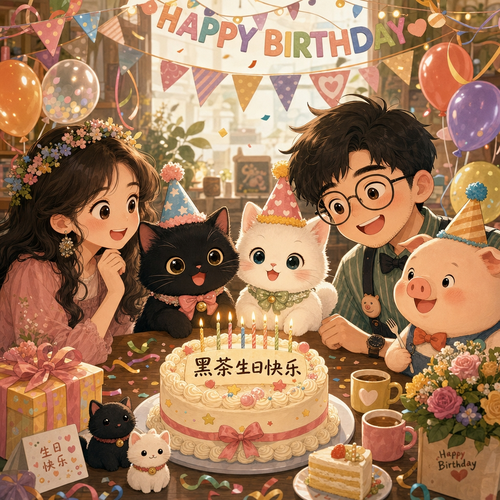

每一年都有一个独立主题，像给那一岁的黑茶和茉莉寄出一封新请柬。
Annual Cat Birthday Album
黑茶和茉莉的生日纪念册
每一年做一个主题网页，把生日、照片、视频和当年的小故事收进同一个家。 从黑茶一岁的独享档案，到黑茶和茉莉第一次同框，再到往后的每一封生日请柬。

Timeline
一年一页，慢慢长大
从第一年开始，每一张生日请柬都会留下自己的颜色、照片和片段。 往后翻，就是黑茶和茉莉一起长大的路。
Album
把生日收进同一个家
照片、视频、愿望和小故事放在一起，翻开时能立刻回到那一天。
新的年份会一页页接上，变成两只猫自己的时间轴。